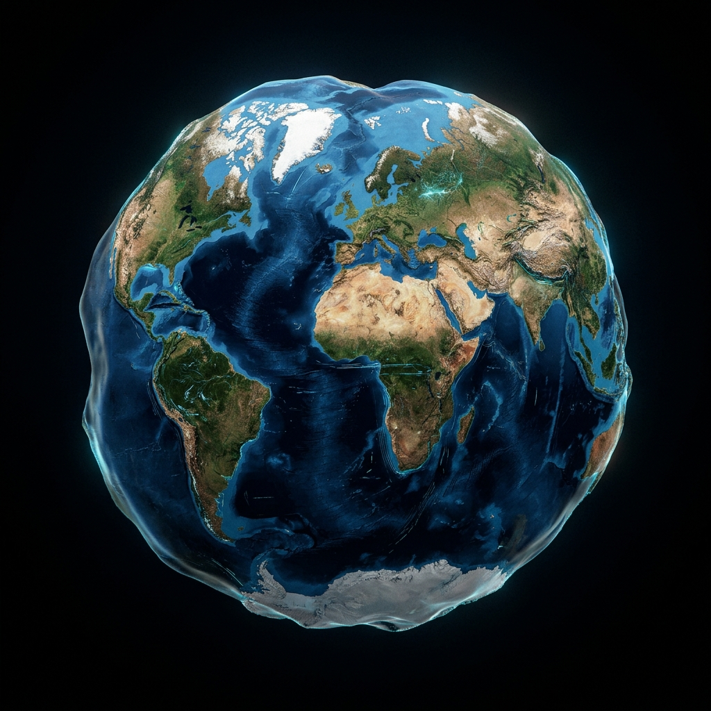
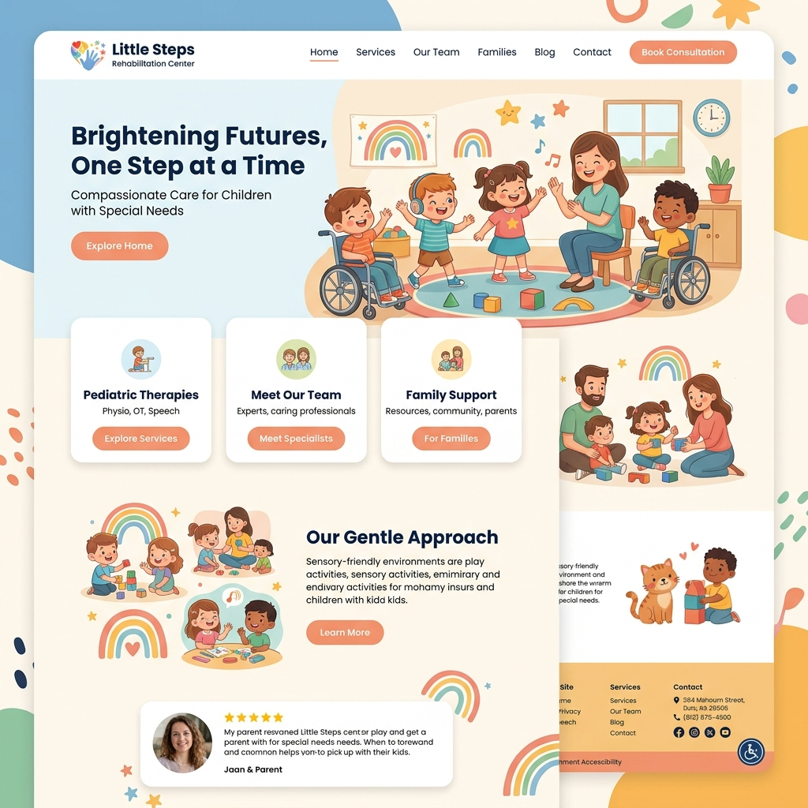

Цели & IT-Путь
Моя цель
Я стремлюсь стать профессиональным программистом, чтобы разрабатывать технологичные, удобные и полезные продукты для общества, автоматизирующие рутину и помогающие людям решать экологические и социальные задачи.
- Создание социально полезных веб-приложений и ботов
- Исследование ИИ-интеграций в повседневную жизнь
- Внесение вклада в автоматизацию и экологические проекты Казахстана
Как я пришел в IT
Всё началось с одной покупки и искреннего детского любопытства:
Получение первого ноутбука
Родители купили мне ноутбук, ставший точкой входа в мир компьютерных технологий.
Изучение устройства системы
Я начал с интересом изучать программы, настройки и базовую логику работы компьютера.
Поступление в Cap Education
Я захотел программировать профессионально и записался на полноценный курс обучения.
Аида
Вдохновляющий ментор
Наставничество и поддержка
«Аида преподает мне программирование в Cap Education. Она открыла для меня мир чистого кода, научила правильно проектировать интерфейсы, использовать Git и решать логические задачи на JavaScript.»
- Вдохновляет писать чистый и поддерживаемый семантический код.
- Научила дебажить код и использовать инспекторы браузера.
- Помогла перейти к полноценной верстке и деплою сайтов с нуля.
Точка А → Точка Б
Старт обучения Точка А
В начале своего пути я практически не разбирался в написании кода и разработке сайтов. Мои умения ограничивались использованием ноутбука для игр и учебы. Логика веб-интерфейсов казалась мне очень сложной и непонятной.
Обычный пользователь
Использовал компьютер только для базовых повседневных задач.
Результат обучения Точка Б
Сейчас я уверенно верстаю адаптивные сайты на HTML и CSS с нуля, пишу интерактивные скрипты на JS, создаю автоматизированных Telegram-ботов на Python и публикую готовые проекты на GitHub Pages.
Junior Developer
Создаю полноценные веб-интерфейсы и автоматизирую задачи с помощью кода.
Хобби & Увлечения
Волейбол
Я люблю играть в волейбол во внеучебное время. Командный спорт учит меня взаимодействовать в группе, быстро принимать решения на поле и дает прекрасный заряд бодрости и физического тонуса после работы за компьютером.
Помощь родителям
Я всегда нахожу время, чтобы помочь родителям по дому и семейным делам. Это приучает меня к ответственности, порядку в быту и позволяет проводить больше качественного и полезного времени с моей семьей.
Лучшие Работы
Здоровый образ жизни
Интерактивный Телеграм-бот, мотивирующий вести правильный образ жизни. Рассчитывает индекс массы тела, предлагает программы тренировок и дает рекомендации по повседневному питанию.
Профилактика кибербуллинга
Сайт для помощи подросткам, столкнувшимся с интернет-травлей. Предлагает психологические ресурсы, инструкции по блокировке токсичных пользователей и контакты доверия.

Реабилитационный центр
Сайт реабилитационного центра для детей с особыми образовательными потребностями (ООП). Удобная структура и доступное оформление для быстрого поиска услуг центра.
Экология Казахстана
Информационный проект, призывающий жителей Казахстана сохранять чистоту окружающей среды, правильно сортировать мусор и бережно относиться к природным ресурсам страны.
GitHub & Форма связи
Мой GitHub
Все исходные файлы моих проектов находятся в моем публичном репозитории на GitHub. Я уделяю большое внимание чистоте кода и понятной истории коммитов.
Отправить сообщение
Если у вас появились вопросы или предложения по сотрудничеству.